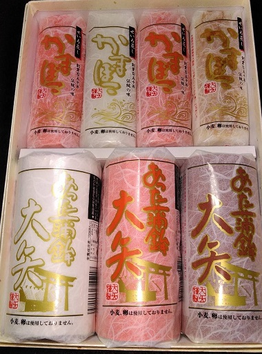

6. 最後に

ここまで大矢蒲鉾商店さんについて紹介してみましたが、いかがだったでしょうか？
かまぼこにもいろいろな種類があって、その歴史も深いものだったのですね。
おすすめの「 ごま油 ＋ 塩を溶かしたもの 」で、またかまぼこを食べてみたいなと思いました～(*´▽｀*)
かまぼこについてはじめて知ることが多く、とても勉強になりました！
ここまでサイトを見てくださった方はお分かりになるとは思うのですが、私と大矢蒲鉾商店さんの奥さんとは知り合いで、
機会があり、今回紹介させていただくことになりました。
今回この機会を与えてくださった奥さんには感謝でいっぱいです(*^-^*)
ちなみにですが、
奥さんによると9月頃（サイトを書いた現在2023年）に大矢蒲鉾商店さんのお店は、
新しく居酒屋さんとしてオープンするそうです！！

このサイトが上がるころには9月（2023年）であるとは思うのですが、どうしても今回は大矢蒲鉾商店さんの紹介をさせていただきたくて、今回は紹介をさせてもらいました。
新しく居酒屋さんになれば、その時にまた食べにお邪魔させてもらおうと思っています(*^^)v
オープンするのがとても楽しみです！！
以上です。
最後まで閲覧していただき、どうもありがとうございました！！